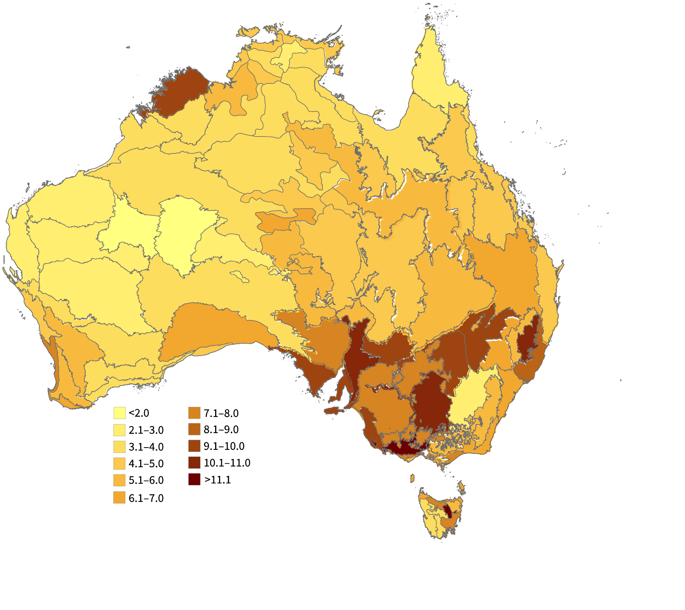

Tackling Biosecurity Threats
Australia is one of the most biodiverse continents on our planet, but the health of our native flora, fauna and environment is under threat from introduced and invasive species. Introduced species include agricultural, horticultural and forestry plants and crops, and domestic animals, however many of these species have been introduced into regions outside their native range and have become problematic. The impact of invasive species (introduced species designated as causing harm) now threatens commercial sectors, Indigenous peoples’ connection to Country and Australia’s native biodiversity.
The Atlas of Living Australia (ALA) aggregates species occurrence data within Australia, be they native or introduced species.
The ALA holds more than 2,300 introduced species and over 1.9 million occurrences of pests, weeds and agricultural diseases.
Furthermore, through automated aggregation of data from over 850 data partners, the ALA is an essential resource for biosecurity detection, and is often the first platform where new biosecurity incursions are detected.
To aid the research and management of introduced and invasive species, the ALA has been developing new data infrastructure, and partnering on several biosecurity initiatives.
Record a sightingAustralia’s Bioregions
(IBRA, Interim Biogeographic Regionalisation for Australia)
Invasive Species

 Lynn Craggs CC BY NC.jpg)
 Photo Credit Yingyod Lapwong CC BY NC.jpg)
 Photo Credit EmmaFallon01 CC BY NC.jpg)
 Photo credit rgm66 CC BY NC.jpg)
 Photo Credit Roxanne Lazarus CC BY NC.jpeg)
 Photo Credi Leithalb CC BY NC.jpeg)
 Photo credit Elaine Parker CC BY NC.jpg)
 Photo rcedit Gillbsydney CC BY NC.jpg)
 James Bailey CC BY NC.jpeg)
 Phot Credit Lavandulan CC BY NC.jpeg)
 Photo Credit Julius Simonellie CC BY NC.jpg)
 Photo Credit A Rector CC BY NC.jpeg)
 Photo Credit Ellura Sanctuary CC BY NC.jpeg)
 Fay Arcaro CC BY NC.JPG)
Query the ALA data
Biosecurity programs
Biosecurity Alerts Service
Citizen Surveillance
Biosecurity Data Aggregation
Restricted (Biosecurity) Data Access Project
Australia receives a huge volume of imports every year and these imports create a risk of invasive species entering Australia. A complex biosecurity system is in place at the border that blocks the vast majority of invasive species, but early detection of invasive pests, weeds, and fungi in the environment can further protect Australia’s biodiversity and secure important industries.
Every week researchers, government, industry, and citizen scientists submit thousands of sightings of plants, animals, and fungi to the ALA — including invasive species. To ensure management authorities are notified swiftly of new invasive species incursions, the ALA partnered with the Commonwealth Department of Agriculture, Fisheries and Forestry (DAFF) and CSIRO through the Catalysing Australia’s Biosecurity initiative to develop the Biosecurity Alerts Service. This service provides an automated mechanism to alert management authorities when observations of species of interest are shared with the ALA. This service is already in use by biosecurity managers nation-wide, and has been involved in detecting multiple locally significant biosecurity discoveries including one of the first discoveries of Asian Shore Crabs in Victoria and Freshwater Gold Clam in Queensland.
Read more on the project Fact Sheet, or contact us if you’re interested in joining ALA’s biosecurity alerts system.
 Photo Credit Allan Lugg CC BY NC.jpeg)
Photo: Allan Lugg CC BY NC
 Photo CRedit Sandy CC BY NC.jpg)
Photo: Sandy CC BY NC
The ALA is Australia’s largest open-source biodiversity data infrastructure with hundreds of data providers. As such, the ALA is often the first platform where new species incursions are recorded; including through the fastest growing source of data for the ALA- citizen science. The ALA recognises the importance of community surveillance as an important early warning system for new biosecurity incursions and also helping to improve understanding of the spread of invasive species. The ALA is working to assist the community through the development of projects and tools that enhance the ability of our community to identify species of biosecurity concern. Currently, the ALA is helping to advise the Invasive Species Council on the development of citizen science projects targeting invasive species of concern.
We are also continually looking for ways to enhance the identification of introduced and invasive species through the various biodiversity data providers we receive data from. To record a sighting of a species, use any of these applications to ensure the data goes into the ALA.
Introduced and invasive species now make up a significant proportion of all species recorded in Australia, but until recently the data to show this has been elusive. To tackle this challenge, the ALA is collaborating with government departments, non-government organisations and industry partners to increase the aggregation of pests, weeds and diseases data into the ALA. Through this work the ALA will be able to more accurately represent the true prevalence of introduced species in our environment and enhance the value of the ALA for the biosecurity sector nationally. See ALA Labs for how to plot invasive species distributions with alpha shapes and choropleth maps in Python.
Please contact us if you have biosecurity data that you’d like share via the ALA.
Major partners contribute occurrence data for invasive pests such as cane toads (Rhinella marina) in Australia.
Partners include:

Sensitive species data form a central component of biosecurity legislation (Biosecurity Act 2015) aimed at managing risk to human health, trade, agriculture, and the environment from the introduction of exotic species, viruses and pathogens. The sensitivity of these species data, however, has led to invasive species occurrence databases not being publicly available or not being aggregated in one place, which has limited its use for surveillance and management. To tackle the challenges of sharing sensitive species data, the ALA in collaboration with governments around Australia has developed a national standard and data-sharing service, which enables jurisdictions to obscure and share data, and to provide a controlled access point for licenced third-party users.
Learn more about the Restricted Access Species Data (RASD) project, or contact us if you’d like to discuss this project with us.
 Photo Credit Franz Anthony CC BY NC.jpeg)
Photo: Franz Anthony CC BY NC
ALA Biosecurity Partners & Projects

Australian Biocontrol Hub
Biological control ("biocontrol") involves the introduction of insects, mites and/or pathogens of a target weed to reduce the weed density to a level at which it can be maintained. It is an economical, self-sustaining and environmentally friendly management technique. The ALA hosts the Australian Biocontrol Hub, which is used for the monitoring of biocontrol agent releases and the capturing of biocontrol agent spread, providing easy access to information on biocontrol agent diagnostics, management practices and references. There are currently 29 weeds documented for biocontrol projects in the Biocontrol Hub. The Australian Biocontrol Hub was developed in collaboration with the Agriculture Victoria, Meat and Livestock Australia and the Australian Government Department of Agriculture Fishing and Forestry (DAFF).
The Australian Biocontrol Hub is accessible via the web or a custom-made app (for Apple and Android).
Australian Reference Genome Atlas (ARGA)
Although the speed of the generation of genomics data is increasing rapidly, these data themselves are currently located in disparate and disconnected repositories, making the task of searching long and difficult. The Australian Reference Genome Atlas will create a single, flexible index to assist researchers and government agencies to co-locate all genomics data for a given taxon (both native and introduced) in a single search.
Find out more about the ARGA project.
Biosecurity Commons
One of the challenges facing the biosecurity sector is limited access to modelling resources, expertise and silos between organisations and jurisdictions that impede best practice. Consequently, models are often developed for a single purpose and are rarely shared or reused. The ALA is a partner in developing the Biosecurity Commons - a cloud-based decision support platform for modelling and analysing biosecurity risk and response. The platform will address the limitations of Australia’s biosecurity modelling capability by offering researchers and decision-makers a suite of tools and resources to investigate biosecurity questions. Biosecurity Commons is built upon the architecture, infrastructure, and expertise of the EcoCommons project, and is due to be publicly launched in April 2023.
Find out more about this project at the Biosecurity Commons.
WeedScan
Current weed identification relies on expert knowledge, interpreting taxonomic or morphological identification keys, trying to match a weed with an image in a weed guide or app, or sending a weed image or specimen to herbariums for identification. This often leads to delayed or incorrect identification that impedes timely action, particularly on emerging weeds that threaten biosecurity. The ALA is a partner in developing WeedScan - an artificial-intelligence-based diagnostics and information tool for the rapid identification and management of weeds in Australia. The tool will be available through a website and smartphone app, and is due to be publicly launched in mid-2023.
Find out more about this project at Centre for Invasive Species Solutions.
Weeds Australia
Weeds Australia connects you with knowledge to make informed decisions about managing invasive weeds within Australia. Weeds Australia is managed by Centre for Invasive Species Solutions and weed profiles are hosted by the Atlas of Living Australia. Weeds Australia has received funding from the Australian Government.
Find out more about this project at Weeds Australia.
Catalysing Australia’s Biosecurity - a CSIRO/DAFF initiative
CSIRO and DAFF have embarked on a joint biosecurity research, development, and innovation work program - known as Catalysing Australia’s Biosecurity (CAB). This program, running until 2030 and aligned with the Commonwealth Biosecurity 2030 strategy, will tackle challenges across the biosecurity sector, including detection and diagnostics platforms, taxonomy issues, novel treatments and connecting data systems. The ALA is an active partner in several CAB initiatives and more detail about outcomes from this initiative will be available soon.
Read more about the CSIRO/DAFF initiative at Catalysing Australia’s Biosecurity.
iNaturalist Australian node
iNaturalist is one of the world’s most popular biodiversity recording platform and is the largest contributor of reports of pests, weeds and diseases to the ALA. Using global species databases and powerful AI-based species identifications tools, iNaturalist helps users identify and record the plants, animals, and other organisms in local areas. iNaturalist hosts online communities, who assist in making accurate identifications, with records contributing to scientific research - such as CSIRO’s recent publication on citizen science reporting probabilities for insects of biosecurity concern. The ALA hosts the Australian node of iNaturalist, and is actively exploring opportunities to enhance biosecurity reporting through the platform.
Find out more about iNaturalist on the web or by downloading the smartphone app (for Apple and Android).
GBIF Australian node
Most biosecurity threats to Australia come from introduced species, and the ALA is uniquely situated to assist with identifying these through its membership in the Global Biodiversity Information facility (GBIF). As the Australian node for GBIF, the ALA has real-time access to exotic species data and distributions. The ALA is also involved in several of GBIF’s biosecurity initiatives, such as partnering to develop a simple methodology for drawing up a 'watch list' that countries can use to identify foreign species most likely to pose a substantial threat of invasion to native biodiversity.
Read more about this project at GBIF.
If you would like to learn more about any of ALA’s biosecurity
projects,
please
contact us
to discuss further.